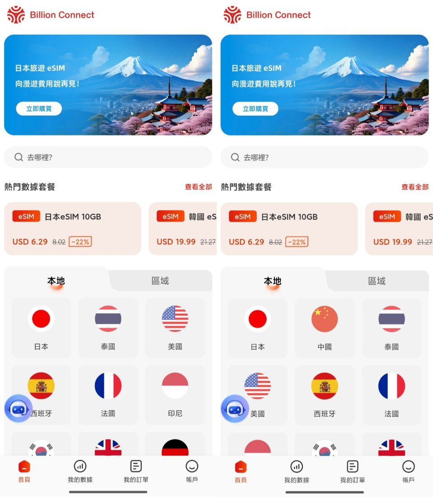
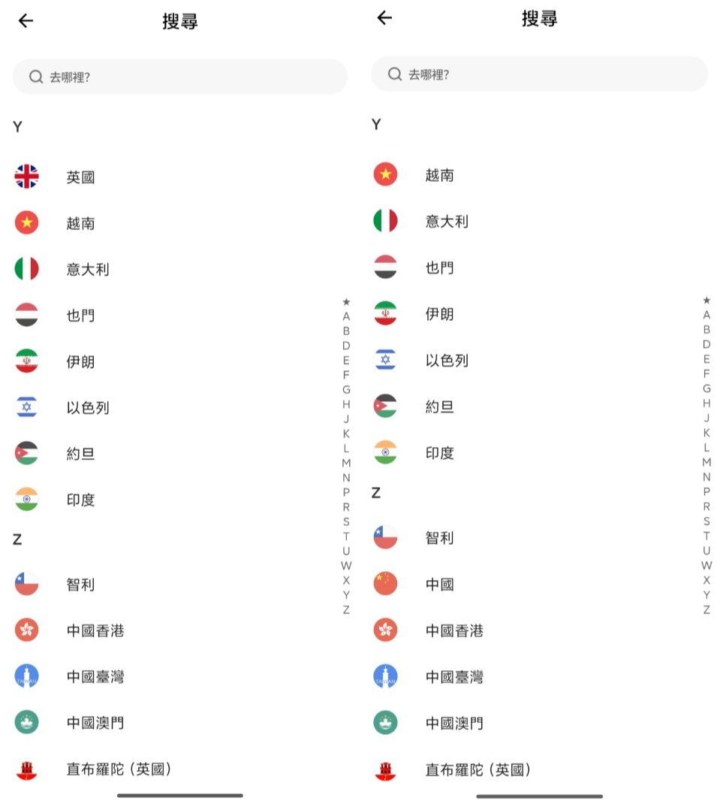
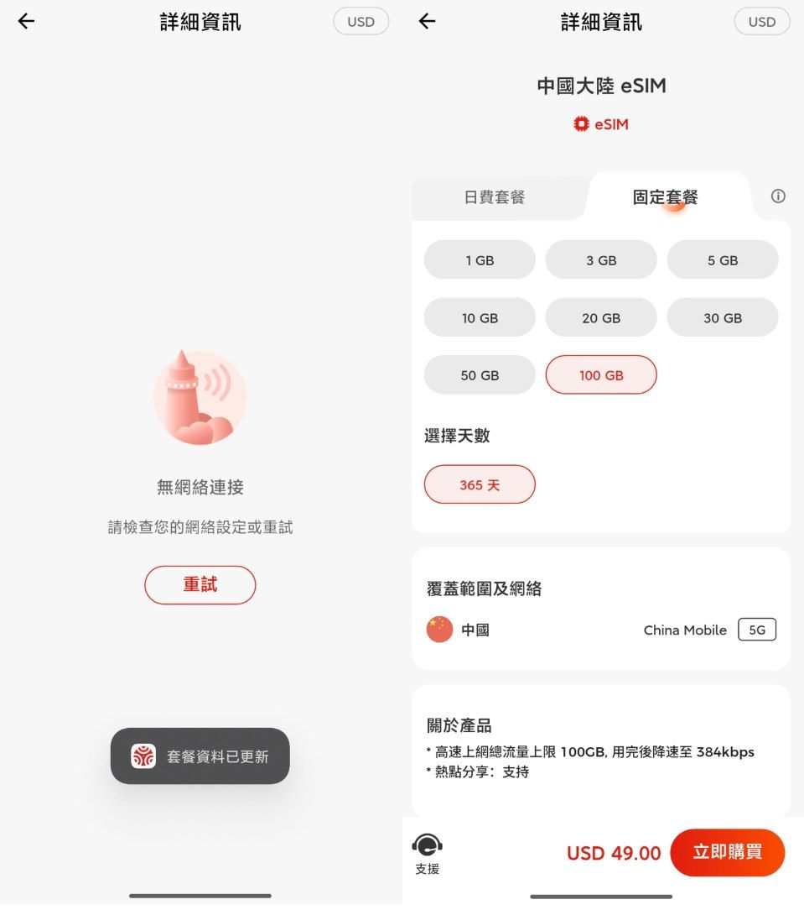
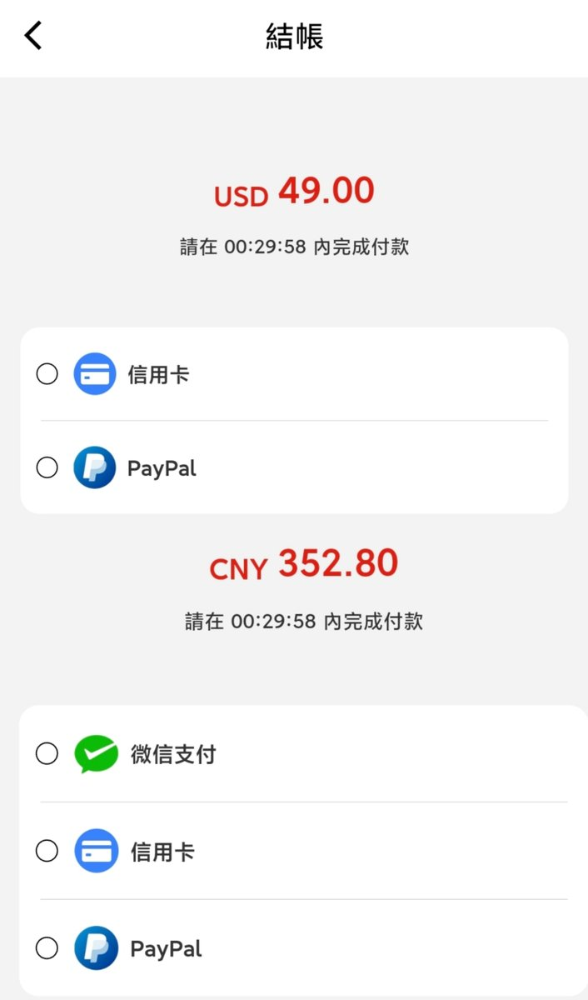

出境上网提供商“亿点连接”旗下BC eSIM疑似阻止中国大陆用户购买中国套餐，使用国内网络打开App时会自动隐藏首页和搜寻中的“中国”。
点进『中国大陆 eSIM』，『香港、澳门及中国 eSIM』和『中国、澳门 eSIM』会出现“无网络连接”的报错。
但在切换至境外（含港澳台）网络后，“中国”区域将重新出现，并且BC eSIM也下架了Alipay（支付宝）付款方式，仅剩信用卡和PayPal，如需使用微信支付需要把货币切换为CNY。
不过现在在Trip仍可以买到和BC eSIM一样的CMLink资源，之前发过的🍌TravelSIM、XPIN和BNESIM亦是师出同门，不过CMLink的卡板在香港和台湾使用需提前实名认证，否则无法使用！
中国公安部在上个月发布《网络犯罪防治法（征求意见稿）》后，内地的监管部门也开始在对境内的eSIM提供商下手，这下开始收紧了😥
点进『中国大陆 eSIM』，『香港、澳门及中国 eSIM』和『中国、澳门 eSIM』会出现“无网络连接”的报错。
但在切换至境外（含港澳台）网络后，“中国”区域将重新出现，并且BC eSIM也下架了Alipay（支付宝）付款方式，仅剩信用卡和PayPal，如需使用微信支付需要把货币切换为CNY。
不过现在在Trip仍可以买到和BC eSIM一样的CMLink资源，之前发过的🍌TravelSIM、XPIN和BNESIM亦是师出同门，不过CMLink的卡板在香港和台湾使用需提前实名认证，否则无法使用！
中国公安部在上个月发布《网络犯罪防治法（征求意见稿）》后，内地的监管部门也开始在对境内的eSIM提供商下手，这下开始收紧了😥



